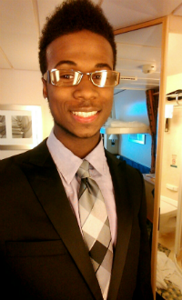

I am a 20 year old Computer Science and Engineering student at The Ohio State University. I spent the former 17 years of my life studying music, playing sports, doing not much else. I hit a major paradigm shift while I was 18 and long story short, decided I should pick up a book or something. A year later, I found myself 500 miles away from home, living in my first apartment, and going to a great school. What a time to be alive.
I currently attend Ohio State University and, driven by my interest in cars, decided to study aerospace engineering in hopes I could become an aerodynamicist. Admittedly, the aerospace field wasn't quite for me and I was probably more interested in the idea of navier stokes, dynamics, and stall rates than the actual practice of it.
My sophomore year, I switched majors and found refuge in our CSE department, since I was always found around a computer in my growing years. Truthfully, my interest in computers wasn't obvious to me initially, but after discovering that I may have an apptitude for coding my freshman year, I decided to following through. It's thus far been a fruitful choice.
I am currently involved in the school's information systems association organization, which has been a great ticket into chatting with the Fortune 500 brass. In addition, my @_CyberAlliance twitter page is back up and running. It's essentially the offspring of a technical writing class project, but still serves to advocate safe practices in cyber security for both businesses and personal useage. I work two jobs, one currently at Ohio State's department of Mechanical engineering, front desk at the advising office. My second is at a 24/7, on-call IT student technician team. Both are rewarding. My aspirations are to either end up in the software engineering industry, or work as a computer systems analyst. I work hard everyday to make sure that one of the two will come to fruition.